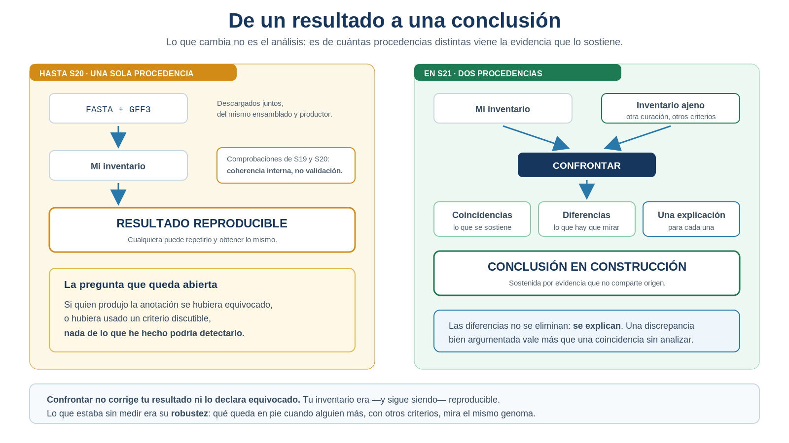
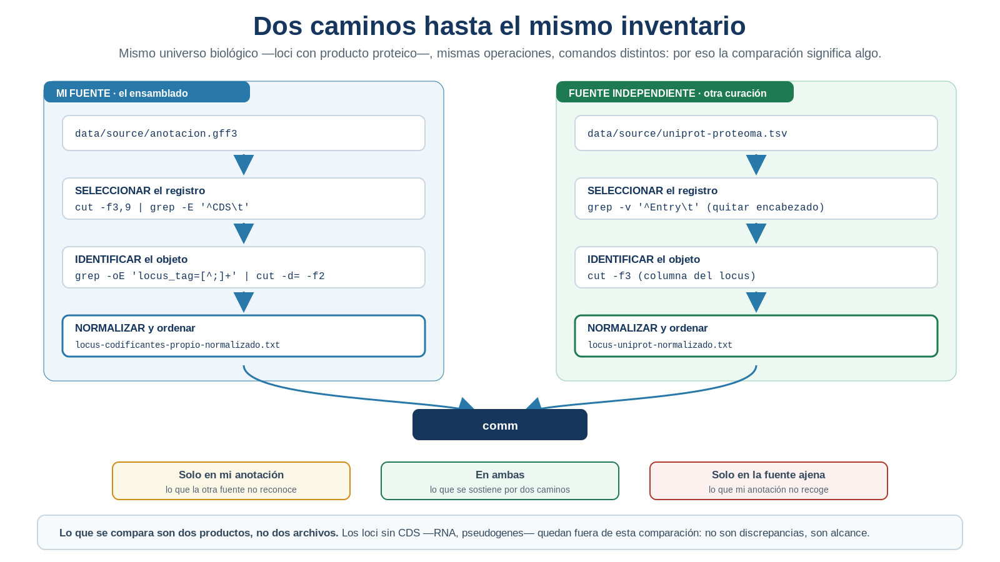
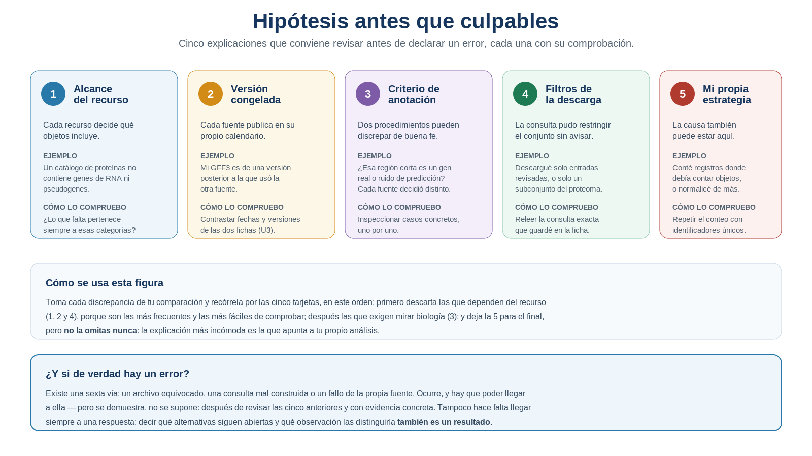

S21 — Confrontar: validar un resultado con una fuente independiente
Antes de clase descargarás una tabla de una fuente independiente, registrarás su procedencia y la auditarás, igual que hiciste en la Unidad 3 con tus archivos. Durante el taller recuperarás de esa tabla la misma evidencia biológica que obtuviste del GFF3, pondrás a prueba tu política de normalización sobre datos que no nacieron con ella y confrontarás los dos inventarios. Después integrarás en doc/protocolo.md la sección Contraste con una fuente independiente.
El primer intento es formativo: importa que anticipes cuántas diferencias esperas y por qué, no que aciertes el número.
Ficha del módulo
| Elemento | Descripción |
|---|---|
| Sesión | S21, 2 horas |
| Unidad | U4. Procesamiento y exploración de datos genómicos |
| Competencia principal | D. Análisis y exploración de datos genómicos |
| Competencias integradas | A. Documentación reproducible; B. Entorno Unix; C. Manejo de datos biológicos |
| Propósito | Confrontar el inventario propio con el de una fuente independiente, y explicar biológicamente cada discrepancia en lugar de eliminarla |
| Consulta previa del Plan | S21 · Tablas biológicas de otra procedencia; este módulo lo sustituye como lectura autocontenida |
| Continuidad | S18 seleccionó; S19 identificó; S20 normalizó; S21 pone el resultado a prueba |
| Lectura indispensable | Secciones 1–6 de este módulo (~55 min) |
| Lectura de consulta | Sección 7; documentación de la fuente elegida; Buffalo (2015), Cap. 7 |
| Primer intento | Práctica 1: ficha de procedencia y predicción de la discrepancia, 25 min |
| Fuente canónica | Tabla TSV de UniProt, con la consulta y las columnas fijadas por el docente; copia de respaldo con checksum en la carpeta del curso |
| Evidencia | Ficha verificable de la segunda fuente, su auditoría, los dos universos comparables normalizados, las tres zonas y una hipótesis por grupo de discrepancias |
| Tarea numerada | Ninguna nueva. La evidencia se incorpora a doc/protocolo.md |
Hoy no hay ninguna herramienta nueva. Todo lo que necesitas ya lo sabes hacer. Lo que cambia es de dónde viene la evidencia, y esa diferencia es más grande que cualquier comando.
Relación con lo que ya sabes
S20 S21
Hacer comparables dos representaciones → Poner el resultado a prueba
"ya puedo comparar sin falsos positivos" "¿lo confirma alguien que no sea yo?"En S20 conseguiste que dos listas fueran comparables y comprobaste que tu FASTA y tu GFF3 se corresponden. Fue una comprobación valiosa, pero tiene un límite que conviene mirar de frente: ambos archivos venían del mismo sitio. Los descargaste juntos, del mismo ensamblado, producidos por el mismo procedimiento. Que coincidan demuestra que el paquete es internamente coherente; no demuestra que su contenido sea correcto.
Si quien anotó ese genoma hubiera usado un criterio discutible, o se hubiera equivocado, ninguna de tus comprobaciones lo habría detectado: todas miraban dentro del mismo paquete.
| Habilidad que ya tienes | Dónde la aprendiste | Qué cambia en S21 |
|---|---|---|
| Documentar la procedencia de un archivo | U3 | Se aplica a una fuente que tú eliges, y su ficha decide qué comparaciones son legítimas |
| Auditar un archivo antes de usarlo | S20 | Se audita una tabla con convenciones ajenas, no las tuyas |
| Recuperar identificadores | S19 | El formato cambia por completo; la definición del objeto no |
| Normalizar con una política | S20 | La política se pone a prueba sobre datos que no la vieron nacer |
Comparar listas con comm |
S19, S20 | Las tres zonas dejan de ser un control técnico y pasan a ser un resultado biológico |
| Declarar límites | S13–S20 | Aparece un límite nuevo: qué no puede decidirse con la evidencia disponible |
Lo nuevo de hoy no es una operación sobre archivos. Es una operación sobre tu propia confianza.
Tu lugar en el ciclo de la evidencia
Las seis sesiones que cierran la unidad no enseñan seis herramientas: enseñan los seis pasos por los que una observación se convierte en evidencia científica. Hoy trabajas el cuarto.
S18 SELECCIONAR la evidencia correcta ✔ resuelto
S19 IDENTIFICAR el objeto biológico correcto ✔ resuelto
S20 NORMALIZAR la evidencia para compararla ✔ resuelto
▶ S21 CONFRONTAR con una fuente ajena ← estás aquí
S22 CUANTIFICAR e interpretar
S23 INTEGRAR el ciclo completo, reproducibleLos tres primeros pasos construyeron un resultado reproducible: cualquiera puede repetirlo y obtener lo mismo. Falta saber si además es robusto, y eso no puede responderlo el mismo conjunto de datos que lo produjo.
Dónde estás en la investigación
| Pregunta de la investigación | En S21 |
|---|---|
| ¿Cuántos genes tiene el genoma? | ✔ Refinado en S18; hoy se pone a prueba contra otra fuente |
| ¿Coinciden mis dos archivos entre sí? | ✔ Resuelta en S19–S20 (coherencia interna) |
| ¿Una fuente independiente reconoce los mismos genes? | ✔ Se resuelve hoy |
| ¿A qué se deben las diferencias que aparezcan? | ✔ Se interpreta hoy, con hipótesis explícitas |
| ¿Qué diferencias puedo resolver y cuáles no? | ✔ Se delimita hoy |
| ¿Cuánto miden los genes que difieren, y en qué proporción? | ☐ S22 |
| ¿Puede otra persona reproducir toda la investigación? | ☐ S23 |
Si tu organismo está bien estudiado, la mayoría de los identificadores coincidirá. Eso no hace la sesión trivial: el trabajo está en las diferencias, y bastan unas pocas para aprender a explicarlas. Una coincidencia total también exige interpretación —qué error no habría detectado esta comprobación—, igual que en S19.
Resultados de aprendizaje
Al finalizar la sesión podrás:
- Explicar por qué un resultado reproducible todavía no es una conclusión científica.
- Distinguir coherencia interna de validación con evidencia independiente.
- Evaluar si una fuente es realmente independiente de la que ya usas, y en qué lo es.
- Documentar la procedencia de una fuente externa con el rigor de la Unidad 3.
- Auditar una tabla con convenciones ajenas antes de extraer nada de ella.
- Recuperar de un formato nuevo la misma evidencia biológica, conservando la definición del objeto aunque cambien los comandos.
- Poner a prueba una política de normalización sobre datos que no la vieron nacer, y ampliarla con justificación.
- Construir dos universos biológicamente equivalentes antes de comparar nada.
- Distinguir una diferencia de alcance —objetos que un recurso no podía contener— de una discrepancia que exige explicación.
- Formular para cada grupo de discrepancias una hipótesis con su evidencia a favor, sus alternativas abiertas y su grado de confianza.
- Delimitar qué no puede decidirse con la evidencia disponible y qué observación lo decidiría.
Lista de verificación previa
Antes del taller comprueba que tienes:
Descarga la tabla con tiempo. Si el recurso no responde o cambia, usa la copia de respaldo del curso y regístralo: lo que no puede pasar es llegar al taller sin la segunda fuente.
Ruta de S21
| Momento | Qué hacer | Tiempo estimado |
|---|---|---|
| Antes de clase | Leer las secciones 1–6; resolver las Prácticas 1 y 2 (descarga, ficha y auditoría) | 55 + 40 min |
| Taller (1.ª hora) | Recuperar la evidencia de la tabla externa y poner a prueba la política (Prácticas 3 y 4) | 60 min |
| Taller (2.ª hora) | Confrontar los dos inventarios y clasificar las zonas (Práctica 5) | 60 min |
| Después del taller | Interpretar cada discrepancia (Práctica 6) y redactar la sección S21 | 60 min |
Las secciones 1–6 son indispensables; la sección 7 es de consulta. La sección 8 guía la documentación posterior.
1. Reproducible no es lo mismo que confiable [Indispensable]
Tu inventario del genoma es reproducible: está documentado, cada número tiene su comando y cualquiera puede regenerarlo. Eso es mucho, y costó ocho sesiones conseguirlo. Pero fíjate en lo que no demuestra.
Reproducible significa “si repites mis pasos, obtienes mi resultado”. No dice nada sobre si el resultado describe bien la realidad. Un análisis impecable sobre una anotación equivocada produce un resultado perfectamente reproducible y perfectamente falso.
Conviene distinguir cuatro cosas que suelen confundirse, porque cada una responde a una pregunta distinta:
| Nivel | Qué garantiza | Qué no garantiza |
|---|---|---|
| Reproducibilidad | Que cualquiera repita tus pasos y obtenga tu resultado | Que el resultado describa bien el genoma |
| Coherencia interna | Que las partes de un mismo paquete de datos concuerden entre sí | Que ese paquete sea correcto |
| Concordancia entre fuentes | Que dos procedencias distintas coincidan en lo evaluado | Que ambas no compartan el mismo error de origen |
| Robustez | Que el resultado se mantenga al cambiar de datos o de procedimiento | Que sea verdadero |
Hoy pasas del segundo nivel al tercero. No llegas a la verdad: llegas a una conclusión provisional mejor sustentada, que es todo lo que la evidencia permite.
La pregunta que gobierna toda esta sesión es esta:
¿Mi inventario sigue sosteniéndose cuando lo confronto con una fuente independiente?

Figura 21.1. De un resultado a una conclusión. Lo que cambia no es el análisis, sino de cuántas procedencias distintas viene la evidencia que lo sostiene. Elaboración propia.
1.1 Qué hace independiente a una fuente
No basta con que sea otro archivo. Dos fuentes son independientes en la medida en que podrían equivocarse por causas distintas. Es la misma idea que en S13, cuando descubriste que dos de tus tres caminos para contar replicones compartían origen y por tanto compartían sus errores.
La independencia no es un sí o un no: se declara por dimensiones. Dos archivos pueden ser dependientes en su procedencia y aun así servir como control cruzado en otra cosa.
| Segunda fuente | Independiente respecto de | No independiente respecto de | Qué errores puede detectar |
|---|---|---|---|
| El FASTA frente al GFF3 del mismo paquete | Nada de la anotación | La procedencia del ensamblado y su versión | Incoherencias entre secuencia y coordenadas, replicones ausentes: es un control cruzado real, aunque no valide el criterio de anotación |
La anotación GenBank (GCA_…) del mismo ensamblado |
El procedimiento de anotación | El DNA ensamblado, que es el mismo | Diferencias de criterio entre quien depositó el genoma y el proceso automático |
| Un catálogo de proteínas curado aparte | La curación, los criterios y el calendario de versiones | Puede haber partido del mismo genoma | Genes que otra curación no reconoce, o que reconoce y la tuya no |
Ninguna es independiente en todo, y eso está bien: lo importante es en qué lo es, porque eso determina qué errores puede detectar tu comparación y cuáles quedarán invisibles.
IDEA CLAVE. Una fuente no es independiente por ser distinta, sino por poder fallar por razones distintas —y casi siempre lo es solo en parte—. Antes de comparar, escribe en qué lo es y en qué no: esa frase decide qué significa cada diferencia que encuentres y qué errores tu comparación no podría ver.
Práctica 1 — ¿De dónde viene mi segunda fuente? (antes de clase, primer intento)
Pregunta biológica. ¿Qué recurso puede darme un inventario de los genes de mi organismo producido con criterios distintos de los de mi GFF3, y cuánto espero que coincidan?
Objetivo. Conseguir la segunda fuente y documentarla antes de mirarla, con el rigor de U3.
Antes de clase (primer intento). En doc/s21-primer-intento.md:
Descarga la exportación canónica. El docente fija la consulta, el formato TSV y las columnas —son las mismas para todo el grupo, y de ahí depende que los comandos del taller funcionen—. Guárdala como
data/source/uniprot-proteoma.tsvy no la abras con un editor.Registra el archivo, no solo la consulta. Anota nombre exacto, tamaño, número de registros y checksum:
ls -l data/source/uniprot-proteoma.tsv sha256sum data/source/uniprot-proteoma.tsv # o shasum -a 256 en macOSCompleta la ficha de procedencia con el formato de U3: recurso, URL o identificador de la consulta, filtros aplicados, columnas solicitadas, organismo y cepa, release del recurso, fecha de descarga, formato, número de registros y checksum.
Declara la independencia por dimensiones. Completa: “Es independiente de mi GFF3 respecto de… No lo es respecto de… Por tanto puede detectar… y no podría detectar…”.
Anticipa el alcance. ¿Qué objetos crees que incluye este recurso y cuáles no? Piénsalo antes de contar nada: es la clave de la sesión.
Predice. ¿Cuántos de tus genes esperas que aparezcan también aquí, y en qué dirección esperas la asimetría —más exclusivos en tu anotación o en la ajena—? Justifícalo con el paso 5.
Una URL de consulta permite repetir la búsqueda, pero el recurso se actualiza y mañana puede devolver otra tabla. El checksum permite verificar que se usó exactamente este archivo. Tu ficha necesita las dos cosas, y son comprobaciones distintas.
El docente descarga previamente la misma exportación y la deja en la carpeta del curso con su ficha y su checksum. Si el recurso no responde o cambia su interfaz el día del taller, se trabaja con esa copia: es una descarga real y documentada, no un ejemplo inventado. La descarga propia es preferible, pero el taller no puede depender de que el sitio esté disponible.
Adaptación docente. Si un organismo no tiene proteoma de referencia en UniProt, la anotación GenBank (GCA_…) del mismo ensamblado sirve como fuente alternativa. Cambian los comandos de extracción —no el resto de la sesión—, así que el docente debe entregar la ruta equivalente.
Durante el taller. Contrastarás cada predicción con la comparación real.
Después del taller. La ficha entra completa en el protocolo.
Criterio de logro: tu ficha permite a otra persona repetir la consulta y comprobar que usó el mismo archivo, y tu declaración de independencia dice en qué lo es, en qué no, y qué errores no podría detectar.
2. Auditar una tabla que no es tuya [Indispensable]
Antes de extraer nada, la tabla se audita. Es exactamente el procedimiento de S20, aplicado ahora a un archivo cuyas convenciones no elegiste tú.
La exportación canónica trae estas columnas, en este orden:
| Columna | Campo de UniProt | Uso en S21 |
|---|---|---|
| 1 | Entry |
Identificador del registro proteico; no se compara |
| 2 | Protein names |
Contexto para inspeccionar casos concretos |
| 3 | Gene Names (ordered locus) |
El identificador comparable: el equivalente del locus_tag |
| 4 | Gene Names (primary) |
Nombre del gen, cuando existe |
| 5 | Length |
Longitud de la proteína; se usará en S22, no hoy |
Todos los comandos de esta sesión usan cut -f3 porque esa consulta fija el campo del locus en la tercera posición. No es una propiedad de UniProt: es una propiedad de la exportación acordada. Tu primera comprobación es confirmarlo:
head -1 data/source/uniprot-proteoma.tsv | tr '\t' '\n'Ese comando convierte la fila de encabezado en una columna, una etiqueta por línea, así que puedes leerlas en orden y comprobar que la tercera es la del locus. Si no coincide, no ajustes el número: tu descarga no es la canónica y conviene repetirla, porque el resto del grupo trabajará con la otra. Es tr de S20 haciendo algo nuevo: cambiar un delimitador para leer mejor, no para transformar el dato.
Después, lo de siempre:
head -3 data/source/uniprot-proteoma.tsv | cat -A # delimitador real y finales de línea
wc -l data/source/uniprot-proteoma.tsv # líneas totales
grep -vc '^Entry' data/source/uniprot-proteoma.tsv # líneas sin el encabezadoLos dos últimos números deben diferir exactamente en uno. Compruébalo: es lo que demuestra que tu filtro elimina el encabezado y nada más.
Si lo arrastras, se convertirá en un identificador fantasma que aparecerá como discrepancia. grep -v '^Entry' lo descarta porque en esta exportación la primera columna se llama así; no es una estrategia general para cualquier tabla, y por eso se acompaña siempre de la comprobación de arriba. Es el mismo problema que las directivas # del GFF3, con otra cara.
Y una pregunta que en tu GFF3 no tenía sentido pero aquí sí: ¿la columna que te interesa contiene un solo valor por fila? No supongas el separador: averígualo mirando qué caracteres aparecen en ese campo además de letras, dígitos y guion bajo.
grep -v '^Entry' data/source/uniprot-proteoma.tsv | cut -f3 \
| grep -oE '[^A-Za-z0-9_]' | sort -u | cat -A # ¿qué separa los valores múltiples?
grep -v '^Entry' data/source/uniprot-proteoma.tsv | cut -f3 | grep -c '^$' # filas sin locusAnota el separador que encuentres: lo necesitarás en la Sección 3, y si tu exportación usa otro, el comando de allí cambia en un carácter.
Ambas cifras son hallazgos, no estorbos. Una fila sin identificador de locus es un registro que la fuente no ha ligado al genoma. Una fila con más de uno requiere consultar la documentación del recurso antes de interpretarla: puede corresponder a un gen presente en varias copias, a una proteína asociada a más de un locus o a una convención propia de la fuente. Si no puedes determinarlo con el archivo, clasifícalo como caso pendiente de documentación externa y sigue adelante: contarlo y declararlo ya es un resultado.
IDEA CLAVE. Auditar no es desconfiar del recurso: es reconocer que sus convenciones fueron diseñadas para otra cosa. Tu tabla externa no está mal hecha —está hecha para responder preguntas distintas de la tuya—.
Práctica 2 — La forma de la tabla ajena (antes de clase)
Pregunta biológica. ¿Qué contiene exactamente esta tabla, cuántos objetos describe y qué columna identifica a los genes de mi organismo?
Objetivo. Caracterizar la tabla antes de extraer nada de ella.
Pasos.
- Verifica las columnas. Comprueba que la tercera es la del locus, como fija la exportación canónica. Si no lo es, repite la descarga.
- Comprueba el delimitador y los finales de línea con
cat -A, y que tu filtro del encabezado elimina exactamente una línea. - Cuenta los registros sin encabezado y compáralo con tu conteo de CDS de S18 —no con el de genes—. Anota la diferencia: es tu primer dato.
- Delimita el alcance. Busca en la documentación del recurso qué objetos incluye y cuáles no. Escribe una frase: “esta tabla contiene… y por construcción no contiene…”. Es lo que decidirá, en la Práctica 6, qué diferencias son de alcance y cuáles necesitan una hipótesis.
- Averigua el separador de los valores múltiples y anótalo.
- Mide los casos difíciles: filas sin identificador y filas con más de uno.
- Decide qué harás con cada caso y justifícalo. Las filas sin identificador no pueden compararse: se cuentan y se declaran. Las de identificador múltiple quedan pendientes de la documentación del recurso.
- Guarda la auditoría en
results/s21/auditoria-fuente-externa.md.
Producto esperado. Una caracterización de la tabla, la declaración de su alcance y una decisión razonada para cada caso difícil.
Criterio de logro: puedes decir qué objetos biológicos no puede contener esta tabla, y ningún descarte tuyo se justifica por ser incómodo: todos están contados.
3. La misma evidencia, otro formato [Indispensable]
Aquí aparece el problema más importante de la sesión, y no es técnico.
Tu lista de S19 contiene todos los locus_tag de la anotación: genes codificantes, genes de RNA, pseudogenes. La tabla de UniProt contiene loci asociados a un registro proteico. Si las comparas tal cual, la mayoría de las diferencias no dirán nada sobre el genoma: dirán que un catálogo de proteínas no contiene RNA, que es su definición, no un hallazgo.
Comparar exige primero igualar los universos:
| Universo | Qué contiene | De dónde sale |
|---|---|---|
| Propio, comparable | Loci con un producto proteico anotado | Los locus_tag de los registros CDS del GFF3 |
| Externo | Loci asociados a un registro proteico en el recurso | La columna del locus de la tabla externa |
| Fuera de alcance | Genes de RNA, pseudogenes y demás loci sin CDS | La diferencia entre tu lista de S19 y tu lista comparable |
Los dos primeros se confrontan en la comparación principal. El tercero no es una discrepancia: es una comparación de cobertura, y se analiza aparte.
Una diferencia por alcance no es un desacuerdo sobre la existencia del gen. Que un catálogo de proteínas no incluya tu tRNA no pone en duda ese tRNA. Confundir las dos cosas es el error más frecuente al contrastar recursos, y produce informes que denuncian discrepancias inexistentes.
Con esa distinción hecha, sí puedes recuperar de cada fuente la misma evidencia biológica. No repetirás los comandos de S19 —sería imposible, porque esta tabla no tiene columna de tipo ni campo de atributos—. Lo que se repite es la definición del objeto: un locus del organismo con producto proteico anotado. Los comandos cambian; la definición, no.

Figura 21.2. Dos caminos hasta el mismo inventario. Lo que se compara son dos productos elaborados, no dos archivos crudos, y la comparación solo significa algo si la definición del objeto fue la misma en ambos. Elaboración propia.
El universo propio comparable, desde el GFF3. Es la operación de S19 con una restricción nueva: partir de los registros CDS en vez de los gene, porque son los que declaran producto proteico.
grep -Ev '^#' data/source/anotacion.gff3 \
| cut -f3,9 \
| grep -E $'^CDS\t' \
| grep -oE 'locus_tag=[^;]+' \
| cut -d= -f2 \
| sort -u > results/s21/locus-codificantes-propio-original.txtEl universo externo, desde la tabla descargada:
grep -v '^Entry' data/source/uniprot-proteoma.tsv \
| cut -f3 \
| grep -v '^$' \
| tr ' ' '\n' \
| sort -u > results/s21/locus-uniprot-original.txtLéelo como una frase: quita el encabezado, quédate con la columna del locus, descarta las filas sin identificador, separa en líneas distintas las que traían varios, y deja una sola aparición de cada uno.
tr ' ' '\n' convierte cada espacio en un salto de línea, de modo que una fila con dos identificadores pasa a ser dos. Usa el separador que encontraste en la Práctica 2, paso 5: si era otro carácter, cambia ese eslabón; si tu tabla no tenía filas de identificador múltiple, quítalo y anótalo.
Fíjate en los nombres: los dos archivos terminan en -original. Son las listas tal como salen de cada fuente, y no se comparan todavía —eso es la Sección 4—. La convención de la sesión es:
results/s21/locus-codificantes-propio-original.txt results/s21/locus-uniprot-original.txt
results/s21/locus-codificantes-propio-normalizado.txt results/s21/locus-uniprot-normalizado.txtIDEA CLAVE. Que hayas necesitado comandos distintos no debilita la comparación: la refuerza. Si el resultado se sostiene cuando cambia el formato, lo que estabas midiendo era el objeto biológico y no una peculiaridad de tu archivo.
Práctica 3 — Construir dos universos comparables (durante el taller)
Pregunta biológica. ¿Qué loci de mi genoma tienen producto proteico según mi anotación, y cuáles según una fuente independiente?
Objetivo. Producir las dos listas que se van a confrontar, delimitando el mismo universo biológico en ambas.
Parte A — El universo propio comparable
Escribe la definición. Una frase: qué cuenta como locus con producto proteico. Es la misma definición para las dos fuentes, aunque la implementación cambie.
Construye la lista propia desde los registros
CDSdel GFF3, eslabón por eslabón, mirando la salida de cada uno conhead. Guárdala comoresults/s21/locus-codificantes-propio-original.txt.Explica la restricción nueva. ¿Por qué partir de
CDSy no degene, como en S19? Escríbelo: es la decisión que hace legítima toda la comparación.Mide la cobertura. Compara esta lista con la de S19 para saber cuántos loci de tu anotación quedan fuera del universo comparable:
comm -23 results/s19/locus-tags.txt \ results/s21/locus-codificantes-propio-original.txt \ > results/s21/fuera-de-alcance.txtEsos loci no son discrepancias: son objetos que la fuente externa no podía contener. Cuéntalos y mira de qué tipo son en tu GFF3.
Parte B — El universo externo
- Construye la lista externa con la tubería de la Sección 3, usando el separador que averiguaste. Guárdala como
results/s21/locus-uniprot-original.txt. - Cuadra los números. ¿Cuántos identificadores distintos obtuviste? La diferencia respecto al total de registros de la tabla debe explicarse por los descartes y las divisiones de la Práctica 2. Compruébalo con números, no de memoria.
- Inspecciona. Mira las primeras y las últimas líneas de cada lista. ¿Tienen la forma esperada? ¿Alguna trae restos del formato original?
- Declara el límite. Cada lista contiene lo que su fuente reconoce. Ninguna es “la verdad”: son dos descripciones, cada una con su alcance.
Producto esperado. Las dos listas originales y el archivo de loci fuera de alcance, con sus conteos explicados.
Criterio de logro: puedes justificar cada identificador que se perdió por el camino, y explicar por qué los loci sin CDS quedan fuera de la comparación principal en lugar de contarse como diferencias.
4. La política, puesta a prueba [Indispensable]
S20 terminó con una advertencia que ahora toca cumplir: las reglas de normalización no se transfieren a otra fuente sin repetir la auditoría. Hoy es el día.
Tu política de S20 es la hipótesis de partida, no la respuesta. El procedimiento es el de siempre: auditar la lista nueva, comprobar qué reglas siguen haciendo falta, y añadir las que esta fuente exija, cada una con su justificación.
grep -Ec '^[a-z]' results/s21/locus-uniprot-original.txt # ¿alguno empieza en minúscula?
grep -Ec '_' results/s21/locus-uniprot-original.txt # ¿un separador que mi GFF3 no usa?
grep -Ec '\.[0-9]+$' results/s21/locus-uniprot-original.txt # ¿traen sufijo de versión?Aplica después la política a las dos listas, aunque a la tuya no le cambie nada: las dos deben llegar a la comparación en el mismo estado y con el mismo nombre.
locus-codificantes-propio-original.txt → locus-codificantes-propio-normalizado.txt
locus-uniprot-original.txt → locus-uniprot-normalizado.txtSi la política no modifica una de ellas, genera igualmente el archivo normalizado —copiándolo de forma reproducible— y documéntalo. Comparar un archivo -original con uno -normalizado es exactamente el descuido que S20 enseñó a evitar.
Y las mismas preguntas de S20 sobre los efectos: ¿la transformación conserva el número de identificadores?, ¿genera claves vacías?, ¿fusiona dos objetos en uno?
Allí normalizabas dos listas del mismo productor y una regla equivocada saltaba a la vista. Aquí las convenciones son ajenas, y una regla demasiado agresiva fabricaría coincidencias: cada coincidencia falsa es una diferencia real que dejas de ver. Ante la duda, no normalices y documenta la diferencia como pendiente.
IDEA CLAVE. Reutilizar la política sin revisarla sería tan grave como inventar una nueva. Lo que demuestra que tu flujo es general no es que las reglas funcionen sin tocarlas, sino que el procedimiento —auditar, justificar, validar— funcione con datos que no lo vieron nacer.
Práctica 4 — ¿Sirve mi política aquí? (durante el taller)
Pregunta biológica. ¿Están los identificadores de las dos fuentes escritos de forma comparable, o hace falta ampliar la política?
Objetivo. Someter la política de S20 a la misma auditoría que la produjo.
Pasos.
- Recupera tu política de
results/s20/politica-normalizacion.mdy anota qué regla resolvía qué problema. - Audita la lista nueva con las consultas de arriba y con
cat -A. - Marca cada regla existente como sigue haciendo falta, no aplica aquí o sería peligrosa sobre esta fuente.
- Añade las reglas nuevas que esta fuente exija, con su justificación, su riesgo y su control. Si no hace falta ninguna, escríbelo: es un resultado.
- Aplica la política a las dos listas y genera los dos archivos
-normalizado.txt, aunque una de ellas no cambie. - Valida con los cuatro controles de S20: cardinalidad, claves vacías, colisiones e idempotencia.
- Actualiza la política como una versión nueva, sin borrar la de S20. La comparación entre ambas documenta qué tuvo que cambiar al salir de tu propio proyecto.
Producto esperado. La política ampliada y los dos archivos -normalizado.txt listos para compararse.
Criterio de logro: cada regla nueva nace de un rasgo observado en esta fuente, y ninguna se justifica por haber aumentado las coincidencias.
5. Confrontar: las tres zonas como resultado biológico [Indispensable]
Ahora sí, la comparación. El comando es el que ya conoces:
Se comparan las dos listas normalizadas, nunca una original contra una normalizada, y cada zona se guarda en su propio archivo:
sort -c results/s21/locus-codificantes-propio-normalizado.txt # falla si no está ordenada
sort -c results/s21/locus-uniprot-normalizado.txt
comm -23 results/s21/locus-codificantes-propio-normalizado.txt \
results/s21/locus-uniprot-normalizado.txt > results/s21/solo-propio.txt
comm -13 results/s21/locus-codificantes-propio-normalizado.txt \
results/s21/locus-uniprot-normalizado.txt > results/s21/solo-uniprot.txt
comm -12 results/s21/locus-codificantes-propio-normalizado.txt \
results/s21/locus-uniprot-normalizado.txt > results/s21/en-ambas.txt
wc -l results/s21/solo-propio.txt results/s21/en-ambas.txt results/s21/solo-uniprot.txtTres números, sin porcentajes. Calcular qué proporción representa cada zona, cuánto miden esos genes o cómo se reparten por replicón exige operar sobre varias columnas y hacer aritmética, y ninguna herramienta que tienes sabe hacerlo. Es el motor de S22.
Hasta S20, esas tres zonas eran un control técnico: te decían si tus archivos se correspondían. Hoy son otra cosa. Cada zona es un resultado biológico que hay que interpretar:
| Zona | Qué contiene | Primera lectura |
|---|---|---|
| Solo en mi anotación | Loci con CDS que la fuente ajena no recoge | Recuerda que los RNA y pseudogenes ya quedaron fuera del universo: aquí la diferencia sí pide explicación |
| En ambas | Loci reconocidos por las dos procedencias | La parte de tu inventario que sale reforzada hoy |
| Solo en la fuente ajena | Loci que la otra fuente recoge y mi anotación no | ¿Versión distinta? ¿Otro criterio? ¿Un filtro mío que los dejó fuera? |
La zona central no es “lo aburrido”. Es lo único de tu inventario que hoy queda respaldado por evidencia que no controlas tú, y por tanto lo que puedes afirmar con más fuerza. Pero dilo con precisión: no “N genes están confirmados”, sino “N loci fueron reportados por dos fuentes de procedencia distinta, concordantes en los aspectos evaluados y con su independencia parcial documentada”. La concordancia refuerza; no demuestra existencia.
Práctica 5 — Confrontar los dos inventarios (durante el taller)
Pregunta biológica. ¿Qué parte de mi inventario reconoce también una fuente independiente, y qué parte no?
Objetivo. Producir la comparación y clasificarla, sin interpretarla todavía.
Parte A — Comparar
- Comprueba que ambas listas normalizadas estén ordenadas con
sort -cantes de nada. - Ejecuta las tres comparaciones y guarda cada zona en
solo-propio.txt,en-ambas.txtysolo-uniprot.txt. - Cuenta las tres zonas. Solo los tres números: los porcentajes y las magnitudes son de S22.
El tamaño de cada zona depende de tu organismo, de la versión del ensamblado y de qué recorta la fuente independiente, así que no compares tus cifras con las de otro equipo ni esperes que la intersección sea casi total.
Lo que sí puedes anticipar es la dirección de la asimetría, y conviene que la razones antes de mirar: una fuente que solo cataloga proteínas revisadas casi siempre reconocerá menos entradas que tu anotación completa, porque tu GFF3 incluye categorías que aquella no contempla. Si te sale al revés —muchas entradas que solo existen en la fuente ajena—, no es un error: es una pista de que las dos listas no describen el mismo universo, y eso es exactamente lo que la Práctica 6 te pide explicar.
Parte B — Caracterizar
- Contrasta con tu predicción de la Práctica 1, paso 6. ¿Acertaste la magnitud? ¿Y la dirección de la asimetría?
- Mira los casos, no solo los números. Toma tres identificadores de cada zona no vacía y búscalos en tu GFF3 con
grep. ¿Qué tipo de registro son? ¿De qué fuente de anotación? ¿Comparten algo? - Anota lo que observes, sin explicarlo todavía: la interpretación es la Práctica 6.
Producto esperado. Las tres zonas guardadas y contadas, con tres casos concretos examinados de cada zona no vacía.
Criterio de logro: distingues la magnitud de cada zona de su significado, y no has descartado ninguna diferencia por parecer pequeña.
6. Interpretar: hipótesis antes que culpables [Indispensable]
Tienes diferencias. La tentación es llamarlas errores y buscar cuál de las dos fuentes “se equivocó”. A veces sí hay un error —y hay que poder detectarlo—, pero casi nunca es lo primero que conviene suponer.

Figura 21.3. Una discrepancia no es un error. Cinco explicaciones posibles, cada una con la comprobación que permite distinguirla de las demás. Elaboración propia.
Las tres primeras causas —alcance, versión y filtros— dependen del recurso y son las más fáciles de comprobar, así que se revisan primero. La cuarta exige mirar biología. Y la quinta apunta a tu propio análisis, que es incómodo y por eso mismo no puede omitirse.
Y queda una sexta vía que la figura no dibuja porque no es una explicación sino un fallo: que algo esté efectivamente mal. Un archivo equivocado, una consulta mal construida, un error de la propia fuente. Existe, ocurre y hay que poder llegar a ella —pero se demuestra, no se supone: se llega después de comprobar las otras cinco, y con evidencia concreta.
Para varias discrepancias, la evidencia disponible no alcanza para decidir. Escribirlo —junto con qué observación permitiría distinguir entre las alternativas— es un resultado científico legítimo, y es exactamente lo que has hecho desde S13 con tus apartados de limitaciones.
IDEA CLAVE. El objetivo de hoy nunca fue que las dos fuentes coincidieran, ni averiguar cuál tiene razón. Era saber por qué difieren, y con qué grado de confianza puedes afirmarlo. Una discrepancia con una hipótesis honesta —aunque quede abierta— enseña más sobre tu genoma que una coincidencia que nadie examinó.
Práctica 6 — Una hipótesis por diferencia (después del taller)
Pregunta biológica. ¿Qué explica cada una de las diferencias entre mi inventario y el de la fuente independiente?
Objetivo. Convertir una lista de discrepancias en un conjunto de hipótesis comprobables.
Pasos.
- Agrupa antes de explicar. Recorre los casos de la Práctica 5 y reúne los que compartan un rasgo: mismo tipo de registro, mismo replicón, misma fuente de anotación. Explicar un grupo es más fuerte que explicar tres casos sueltos.
- Propón una hipótesis principal para cada grupo, recorriendo las tarjetas de la Figura 21.3 en su orden.
- Registra la evidencia a favor. Qué observación concreta de tus archivos la sostiene.
- Registra las alternativas que siguen abiertas y qué observación permitiría distinguirlas. No hace falta que las descartes: hace falta que sepas cuáles son y cómo se decidirían.
- Asigna un grado de confianza —alta, media, baja— y justifícalo en media línea.
- Marca lo indecidible. Para los grupos sin resolver, nombra la evidencia pendiente: otra versión del ensamblado, un tercer recurso, literatura sobre ese locus.
- Reformula tu conclusión. Escribe la frase final del día con esta forma: “De mis N loci con producto proteico, M fueron reportados también por la fuente externa; K difieren, y su explicación más probable es…”.
- Completa la tabla del protocolo con una fila por grupo.
Producto esperado. Una tabla de discrepancias agrupadas, cada una con su hipótesis, la evidencia que la apoya, las alternativas abiertas y su grado de confianza.
Criterio de logro: ninguna fila dice “error” sin evidencia que lo demuestre, y todas declaran qué alternativas siguen abiertas en lugar de aparentar una certeza que no tienes.
7. Qué se puede afirmar después de confrontar [Consulta]
Conviene ser preciso con lo que esta sesión autoriza a decir, porque es fácil pasarse de largo en las dos direcciones.
| Puedes afirmar | No puedes afirmar |
|---|---|
| Que N loci fueron reportados por dos fuentes de procedencia distinta, concordantes en lo evaluado | Que esos N loci existen: ambas fuentes pueden compartir un error de origen |
| Que las diferencias tienen una hipótesis explícita, con su evidencia y sus alternativas abiertas | Que una de las dos fuentes es la correcta |
| Que tu procedimiento funciona sobre datos que no nacieron con él | Que funcionaría sobre cualquier formato sin auditarlo |
| Que tu resultado superó una prueba externa que antes no había pasado | Que está validado: una segunda fuente es una prueba, no un certificado |
Fíjate en que aquí conviven dos robusteces distintas y no hay que confundirlas. La de tu procedimiento, que se mantuvo al cambiar de formato. Y la de tu resultado, que se mantuvo ante una procedencia distinta, independiente solo en los aspectos que declaraste. Hoy pusiste a prueba las dos, pero son afirmaciones separadas.
IDEA CLAVE. Confrontar aumenta la confianza; no la garantiza. Lo que tienes al terminar es una conclusión provisional mejor sustentada: un resultado que ha superado una prueba externa. La ciencia no acumula certezas, acumula resultados que han sobrevivido a intentos serios de contradecirlos —y hoy hiciste el primero con tu propio trabajo—.
8. Documentar: la sección del protocolo [Indispensable]
Agrega a doc/protocolo.md, después de la sección de S20.
## S21 — Contraste con una fuente independiente
- **Pregunta biológica:** ¿Reconoce una fuente independiente los mismos genes que mi anotación?
- **Hipótesis o expectativa previa:** (Práctica 1: coincidencia esperada, dirección de la asimetría
y su justificación)
- **La segunda fuente — ficha verificable:**
| Elemento | Valor |
| --- | --- |
| Recurso · URL o identificador de la consulta | … |
| Consulta, filtros y columnas solicitadas | … |
| Organismo y cepa | … |
| *Release* del recurso · fecha de descarga | … |
| Archivo · tamaño · **checksum** | … |
| N.º de registros (sin encabezado) | … |
| ¿Descarga propia o copia de respaldo del curso? | … |
- **Declaración de independencia:**
| Independiente respecto de | No independiente respecto de | Qué errores puede detectar | Qué errores no podría detectar |
| --- | --- | --- | --- |
| … | … | … | … |
- **Universo comparable:**
| Conjunto | Definición | Objetos excluidos y por qué |
| --- | --- | --- |
| Propio | Loci con registro `CDS` en mi anotación | … |
| Externo | Loci asociados a un registro proteico en el recurso | … |
| Fuera de alcance | Loci sin CDS: RNA, pseudogenes… | No son discrepancias: el recurso no podía contenerlos |
- **Auditoría de la tabla externa:**
| Rasgo | Valor | Decisión |
| --- | --- | --- |
| Delimitador · encabezado (elimina exactamente 1 línea) | … | … |
| Columna del locus verificada en la posición esperada | … | … |
| Separador de valores múltiples | … | … |
| Filas sin identificador de locus | … | … |
| Filas con más de un identificador | … | Pendiente de documentación del recurso |
- **Listas utilizadas:**
| Lista | Archivo original | Archivo normalizado | Universo biológico |
| --- | --- | --- | --- |
| Propia | `results/s21/locus-codificantes-propio-original.txt` | `…-normalizado.txt` | Loci con CDS |
| Externa | `results/s21/locus-uniprot-original.txt` | `…-normalizado.txt` | Loci con producto proteico |
- **Estrategia de recuperación:** definición del objeto biológico —la misma para ambas fuentes— y
comandos ejecutados sobre cada formato.
- **Política de normalización:** reglas de S20 conservadas, descartadas y añadidas, con su
justificación; resultado de los cuatro controles sobre las dos listas.
- **Resultado de la confrontación** *(conteos; las proporciones y magnitudes se calculan en S22)*:
| Zona | Archivo | N.º | Casos examinados |
| --- | --- | ---: | --- |
| Solo en mi anotación | `results/s21/solo-propio.txt` | … | … |
| En ambas fuentes | `results/s21/en-ambas.txt` | … | … |
| Solo en la fuente externa | `results/s21/solo-uniprot.txt` | … | … |
| Fuera de alcance (no comparado) | `results/s21/fuera-de-alcance.txt` | … | … |
- **Discrepancias agrupadas e hipótesis:**
| Grupo | Rasgo común | Hipótesis principal | Evidencia a favor | Alternativas abiertas | Confianza | Evidencia pendiente |
| --- | --- | --- | --- | --- | --- | --- |
| … | … | … | … | … | alta/media/baja | … |
- **Interpretación biológica:** qué parte del inventario sale reforzada, qué revela cada grupo sobre
el genoma o sobre los criterios de anotación de cada recurso.
- **Conclusión provisional:** qué concuerda, qué difiere, qué diferencias se explican por alcance,
qué permanece indecidible y qué se medirá en S22.
- **Limitaciones de esta estrategia:**
- Ambas fuentes pueden compartir un error de origen: la concordancia no demuestra existencia.
- La comparación es de **identificadores**, no de coordenadas ni de secuencias.
- La independencia es **parcial** y quedó declarada por dimensiones.
- El alcance del recurso condiciona qué diferencias podían aparecer.
- Varias discrepancias quedan abiertas con la evidencia disponible.
- **Nuevas preguntas que abre:** ¿qué proporción representa cada zona?, ¿cuánto miden esos loci?,
¿cómo se reparten por replicón? (S22)La tabla de hipótesis es el corazón de esta sección. Un protocolo que solo registre cuántos identificadores coincidieron habrá documentado la operación y perdido el resultado.
Evidencia de la sesión
Entrega o conserva, según indique el docente:
doc/s21-primer-intento.mdcon la ficha de procedencia, la declaración de independencia y las predicciones;results/s21/auditoria-fuente-externa.md;- las dos listas originales,
locus-codificantes-propio-original.txtylocus-uniprot-original.txt, con sus comandos exactos, yfuera-de-alcance.txt; - la política actualizada y las dos listas
-normalizado.txt; - las tres zonas —
solo-propio.txt,en-ambas.txt,solo-uniprot.txt— contadas, con tres casos examinados por zona no vacía; - la tabla de discrepancias agrupadas con una hipótesis por grupo;
- las declaraciones «puedo afirmar / todavía no puedo afirmar»;
- sección S21 de
doc/protocolo.md, con las anteriores intactas.
Errores frecuentes y estrategias de diagnóstico
| Error | Por qué ocurre | Estrategia de diagnóstico |
|---|---|---|
| Llamar “error” a toda discrepancia | Se supone que una de las fuentes debe estar equivocada | Recorrer las cinco causas de la Figura 21.3 antes de concluir |
| Arrastrar la línea de encabezado | Parece un registro más | Si aparece un identificador con nombre de columna, falta el grep -v |
| Suponer que la columna del locus tiene un solo valor | En el GFF3 lo tenía | Contar las filas con espacios antes de extraer |
| Descartar las filas sin identificador sin contarlas | Estorban en la comparación | Contarlas primero: son un dato sobre el alcance de la fuente |
| Reutilizar la política de S20 sin auditar | “Ya estaba validada” | Auditar la lista nueva: la validación era para otra fuente |
| Normalizar hasta que las listas coincidan | Se toma la coincidencia como objetivo | Cada coincidencia fabricada oculta una diferencia real; revisar colisiones |
| Comparar listas sin ordenar | comm no avisa |
sort -c sobre ambas antes de comparar |
| Interpretar solo la zona de las diferencias | Parece la única interesante | La zona común es lo que hoy queda confirmado: se reporta explícitamente |
| Concluir que la fuente ajena “tiene razón” | Se le supone autoridad | Preguntar en qué es independiente y cuál es su alcance declarado |
| Concluir que los genes comunes existen con certeza | Se confunde acuerdo con verdad | Dos fuentes pueden compartir el mismo origen del error |
| Dejar una diferencia sin hipótesis | Cuesta trabajo y no da un número | Toda fila de la tabla lleva causa propuesta o evidencia pendiente declarada |
| Comparar conteos globales en lugar de identificadores | Es más rápido | Dos totales iguales pueden corresponder a conjuntos distintos: comparar las listas |
Comparar todos los locus_tag contra un catálogo de proteínas |
Ambas listas “son de genes” | Si los RNA aparecen como discrepancia, los universos no eran equivalentes: partir de CDS |
Comparar una lista -original con una -normalizado |
Los nombres se parecen | Comprobar la terminación de los dos archivos que recibe comm |
| Suponer el separador de los valores múltiples | Se copia el comando de otro compañero | Derivarlo de la auditoría con grep -oE '[^A-Za-z0-9_]' |
| Ajustar el número de columna hasta que salga algo | La descarga no era la canónica | Repetir la exportación con las columnas acordadas |
Rúbricas
| Criterio | Logrado | Parcialmente logrado | Aún no logrado |
|---|---|---|---|
| Procedencia | Ficha completa que permite repetir la descarga exacta | Registra el recurso pero no la consulta ni la versión | No documenta de dónde salió la tabla |
| Independencia | Declara en qué es independiente la fuente y en qué no | Afirma que es independiente sin matizar | No se plantea la pregunta |
| Auditoría | Caracteriza delimitador, encabezado, faltantes y valores múltiples, y decide sobre cada caso | Audita parcialmente o decide sin justificar | Extrae sin auditar |
| Recuperación | Conserva la definición del objeto aunque cambien los comandos, y explica cada descarte | Obtiene la lista sin poder justificar las pérdidas | Adapta la definición al formato disponible |
| Política | Audita la política de S20 sobre la nueva fuente y justifica cada cambio | La reutiliza sin revisarla, o inventa reglas nuevas sin auditar | Normaliza hasta forzar coincidencias |
| Confrontación | Cuantifica las tres zonas, examina casos concretos y contrasta con su predicción | Cuantifica sin examinar casos | Solo reporta si coincidieron o no |
| Interpretación | Agrupa las discrepancias y asigna una causa con su descarte | Propone causas sin descartar alternativas | Califica las diferencias como errores |
| Honestidad epistemológica | Declara qué no puede decidirse y qué evidencia haría falta | Menciona límites genéricos | Presenta la comparación como validación definitiva |
| Reproducibilidad | Cada lista y cada zona quedan en results/s21/ con su comando |
Documenta comandos sin los archivos | No permite reconstruir el contraste |
La rúbrica es formativa: la evidencia se integra al protocolo, que se evalúa de forma acumulativa.
Autoevaluación
Comprobación rápida — formativa, al final del taller
- ¿Por qué un resultado reproducible todavía no es una conclusión?
- ¿Qué hace independiente a una fuente? Da un ejemplo de dos fuentes que no lo sean.
- ¿Por qué no puedes reutilizar los comandos de S19 sobre la tabla externa? ¿Qué sí reutilizas?
- ¿Por qué la política de S20 tiene que auditarse otra vez?
- Una regla nueva hace coincidir muchos más identificadores. ¿Es buena señal?
- ¿Qué puedes afirmar exactamente sobre los loci de la zona común, y qué no?
- Un identificador aparece solo en la fuente ajena. Nombra tres causas posibles.
- ¿Por qué los RNA y los pseudogenes no aparecen en la comparación principal? ¿Dónde quedan?
- Tus dos fuentes coinciden por completo. ¿Qué error no habría detectado esta comprobación?
- ¿Qué diferencia de hoy no puedes resolver comparando listas?
Semáforo
- 🟢 Verde: documento la procedencia de una fuente ajena, declaro en qué es independiente, recupero de ella la misma evidencia, confronto los dos inventarios y explico cada grupo de discrepancias con una causa y su descarte.
- 🟡 Amarillo: consigo la comparación, pero interpreto las diferencias en general o reutilizo la política de S20 sin auditarla.
- 🔴 Rojo: llamo error a toda discrepancia, normalizo hasta que las listas coincidan, o concluyo que la fuente externa tiene razón porque es más conocida.
Si estás en amarillo o rojo, vuelve a las Prácticas 4 y 6: la habilidad central de hoy no es ejecutar comm, es explicar por qué dos descripciones del mismo genoma no dicen exactamente lo mismo.
Cierre con IA: clásico vs. asistido
Trabaja primero a mano. La IA no puede consultar tus archivos ni conoce el alcance real de tu fuente: úsala para poner a prueba tus hipótesis, no para generarlas.
- Formula tú la hipótesis de cada grupo de discrepancias, con su descarte.
- Pide al asistente explicaciones alternativas que no hayas considerado, describiendo el patrón observado —no pegando tus conclusiones—.
- Exige que separe las explicaciones comprobables con tus datos de las que necesitarían evidencia externa.
- Comprueba tú cada explicación nueva sobre tus archivos.
- Registra en
bitacora-ia.mdqué hipótesis añadiste, cuál descartaste y con qué evidencia.
🤖 Prompt para ProfeUnix Bioinfo: > Comparé los identificadores de locus de la anotación RefSeq de un genoma bacteriano con los de un > catálogo de proteínas curado aparte. Encontré este patrón: [describir la zona y el rasgo común de > los casos]. Enumera las explicaciones biológicas o de procedencia que podrían producirlo, indica > para cada una qué comprobación la confirmaría o descartaría con grep, cut, sort, uniq y > comm, y señala cuáles no podrían decidirse sin evidencia externa. No supongas que una de las dos > fuentes está equivocada.
Ante una discrepancia, un asistente tiende a proponer la explicación más común en la literatura general, que puede no aplicar a tu organismo ni a tu recurso. Trata sus respuestas como hipótesis a comprobar, nunca como diagnóstico.
Lo que realmente aprendiste hoy
| Antes | Ahora |
|---|---|
| Tenía un resultado reproducible | Sé qué parte de ese resultado resiste una prueba externa |
| Comprobaba mis archivos entre sí | Contrasto mi trabajo con evidencia que no controlo |
| Una diferencia era un problema a eliminar | Una diferencia es un hallazgo que hay que explicar |
| Confiaba en mi anotación | Sé en qué confío, por qué, y qué sigue sin estar comprobado |
La última fila es la que importa. Hoy no obtuviste más certeza: obtuviste certeza mejor delimitada, que es lo que distingue una afirmación científica de una opinión informada.
Cierre de S21 y puente hacia S22
Cuatro pasos del ciclo están completos:
S18 Seleccionar → qué evidencia cuenta
S19 Identificar → de qué objeto habla
S20 Normalizar → bajo qué representación se compara
S21 Confrontar → qué queda en pie ante una fuente ajenaY hoy pasó algo que no había pasado en toda la unidad: tu resultado dejó de depender solo de ti. Hasta ayer, todas tus comprobaciones eran internas —caminos distintos dentro del mismo paquete de datos—. Hoy sometiste tu inventario a una descripción que no controlas, hecha con criterios que no elegiste, y una parte salió reforzada. No es una certeza: es una conclusión provisional mejor sustentada, y es la que podrías defender ante alguien que dudara de ti.
Si tuvieras que resumir la sesión en una frase, no sería “comparé dos listas”. Sería “aprendí a distinguir lo que puedo afirmar de lo que solo había comprobado conmigo mismo”.
Y sin embargo, mira las discrepancias que quedaron sin resolver. Tienen todas la misma forma:
«¿Ese locus que solo aparece en una fuente es grande o es un fragmento de 60 pares de bases?»
«¿Qué proporción de mi inventario representa cada zona?»
«¿Cómo se reparten las discrepancias entre los replicones?»Hoy solo pudiste contar las tres zonas. Ninguna de esas preguntas se responde comparando listas: todas piden medir —longitudes, sumas, promedios, proporciones, condiciones sobre varias columnas a la vez— y ninguna de tus herramientas sabe calcular.
La pregunta con la que se abre S22 es exactamente esa:
Ya sé qué difiere entre las dos fuentes. ¿Cómo mido cuánto importa esa diferencia?
Conserva results/s21/ completo, sobre todo los archivos de cada zona. En S22 volverás sobre esos mismos identificadores para medirlos, y la tabla derivada de S20 será el punto de partida.
En una frase
- Un resultado reproducible todavía no es una conclusión robusta.
- Solo se comparan universos equivalentes: lo que un recurso no podía contener no es una discrepancia.
- Una hipótesis honesta —con su evidencia y sus alternativas abiertas— vale más que una certeza aparente.
Anexo A. Correspondencia resultado–actividad–evidencia–criterio
| Resultado | Actividad | Evidencia | Criterio | Momento | Nivel en U4 |
|---|---|---|---|---|---|
| RA1 Distinguir reproducible de confiable | Sección 1 | Respuesta razonada | Explica qué no demuestra la reproducibilidad | Antes | Comprensión |
| RA2 Distinguir coherencia interna de validación | Sección 1, Práctica 1 | Declaración de independencia | Identifica el límite de las comprobaciones de S19–S20 | Antes | Comprensión demostrada |
| RA3 Evaluar la independencia de una fuente | Sección 1.1, Práctica 1 | Frase «es independiente en… y no en…» | Distingue los dos casos con argumento | Antes | Aplicación autónoma |
| RA4 Documentar procedencia | Práctica 1 | Ficha de la segunda fuente | Permite repetir la descarga exacta | Antes | Aplicación guiada |
| RA5 Auditar una tabla ajena | Sección 2, Práctica 2 | auditoria-fuente-externa.md |
Cada caso difícil está contado y decidido | Antes | Aplicación guiada |
| RA6 Recuperar la misma evidencia en otro formato | Sección 3, Práctica 3 | Las dos listas -original.txt y fuera-de-alcance.txt |
La definición del objeto se conserva; los descartes se justifican | Taller | Aplicación autónoma |
| RA7 Poner a prueba la política | Sección 4, Práctica 4 | Política actualizada | Cada regla nueva nace de un rasgo observado | Taller | Aplicación autónoma |
| RA8 Clasificar las tres zonas | Sección 5, Práctica 5 | Zonas cuantificadas con casos | Distingue magnitud de significado | Taller | Aplicación autónoma |
| RA9 Formular hipótesis explicativas | Sección 6, Práctica 6 | Tabla de discrepancias agrupadas | Cada hipótesis incluye el descarte de las alternativas | Después | Aplicación autónoma |
| RA10 Delimitar lo indecidible | Sección 7, Práctica 6 | Filas «evidencia pendiente» | Nombra la evidencia que haría falta | Después | Aplicación autónoma |
Anexo B. Alineación transversal
| Actividad | Reproducibilidad | Verificación | Validación | Robustez |
|---|---|---|---|---|
| Ficha de la segunda fuente | URL, consulta, versión y fecha registradas | Otra persona repite la descarga | Se declara en qué es independiente | Se anticipa el alcance antes de contar |
| Auditoría de la tabla externa | Consultas documentadas | cat -A y conteos |
Registros contrastados con el inventario propio | Se miden faltantes y valores múltiples |
| Recuperación en otro formato | Tubería completa en el protocolo | Construcción eslabón por eslabón | La definición del objeto se mantiene entre formatos | Cada descarte se cuantifica y explica |
| Política puesta a prueba | Versión nueva junto a la de S20 | Los cuatro controles de S20 | Las reglas se justifican por rasgos de la fuente nueva | No se normaliza para forzar coincidencias |
| Confrontación | Cada zona en results/s21/ |
sort -c antes de comm |
Fuente de procedencia distinta: la validación más independiente del curso | Se examinan casos, no solo totales |
| Interpretación | Hipótesis y descartes en el protocolo | Comprobación de cada causa sobre los archivos | Se distingue lo decidible de lo indecidible | Se incluye la estrategia propia entre las causas posibles |
Glosario
| Español | Inglés | Definición breve |
|---|---|---|
| Confrontar | Cross-check, confront | Contrastar un resultado con evidencia de otra procedencia |
| Fuente independiente | Independent source | Aquella que podría equivocarse por causas distintas de la primera |
| Coherencia interna | Internal consistency | Acuerdo entre partes del mismo conjunto de datos; no equivale a validación |
| Robustez | Robustness | Grado en que un resultado se mantiene al cambiar los datos o el procedimiento |
| Discrepancia | Discrepancy | Diferencia entre dos descripciones del mismo objeto |
| Alcance del recurso | Scope, coverage | Conjunto de objetos que un recurso decide incluir |
| Curación | Curation | Revisión experta que decide qué entra en un recurso y con qué anotación |
| Proteoma | Proteome | Conjunto de proteínas codificadas por un genoma |
| Ordered locus name | Ordered locus name | Identificador sistemático del locus, equivalente al locus_tag del GFF3 |
| Hipótesis explicativa | Explanatory hypothesis | Causa propuesta para una observación, con una comprobación asociada |
| Evidencia pendiente | Pending evidence | La que haría falta para decidir entre dos explicaciones |
| Conclusión provisional | Provisional conclusion | Afirmación sostenida por la evidencia disponible y abierta a revisión |
Referencias
- Buffalo, V. (2015). Bioinformatics Data Skills. O’Reilly Media. — Cap. 7 (comparación de conjuntos y contraste entre fuentes tabulares).
- The UniProt Consortium. (2025). UniProt: the Universal Protein Knowledgebase. Nucleic Acids Research. https://doi.org/10.1093/nar/gkae1010 — criterios de curación y alcance del recurso.
- UniProt. Gene names (definición de ordered locus name). https://www.uniprot.org/help/gene_name
- Sequence Ontology. (2020). Generic Feature Format Version 3 (GFF3) specification. https://github.com/The-Sequence-Ontology/Specifications/blob/master/gff3.md
- National Center for Biotechnology Information (NCBI). (2024). Prokaryotic Genome Annotation Pipeline (PGAP) — criterios de anotación de la fuente propia. https://www.ncbi.nlm.nih.gov/genome/annotation_prok/
- Free Software Foundation. (2024). GNU Coreutils Manual —
comm,cut,sort,tr,wc. https://www.gnu.org/software/coreutils/manual/coreutils.html - Wilkinson, M. D., Dumontier, M., Aalbersberg, I. J., et al. (2016). The FAIR Guiding Principles for scientific data management and stewardship. Scientific Data, 3, 160018. https://doi.org/10.1038/sdata.2016.18
- Wilson, G., Bryan, J., Cranston, K., Kitzes, J., Nederbragt, L., & Teal, T. K. (2017). Good enough practices in scientific computing. PLoS Computational Biology, 13(6), e1005510. https://doi.org/10.1371/journal.pcbi.1005510
Distribución estimada de las dos horas
| Bloque | Tiempo | Contenido |
|---|---|---|
| Puesta en común de las fichas y las predicciones | 15 min | Prácticas 1 y 2, resueltas antes de clase |
| Recuperar la evidencia de la tabla externa | 25 min | Práctica 3 |
| Poner a prueba la política | 25 min | Práctica 4 |
| Confrontar y cuantificar las tres zonas | 25 min | Práctica 5, parte A |
| Examinar casos concretos | 20 min | Práctica 5, parte B |
| Cierre y puente a S22 | 10 min | Semáforo y primeras hipótesis en voz alta |
Los tiempos son estimaciones. Las Prácticas 1 y 2 se realizan antes del taller —la descarga depende de un recurso externo y no puede improvisarse— y la Práctica 6 después. El núcleo que no debe recortarse es:
recuperar la evidencia ajena → auditar la política → confrontar → examinar casos